0. Словарь
| Слово | Простыми словами |
|---|---|
| Вариант отчёта | Готовый набор настроек: структура, поля, отборы, оформление. Один отчёт — несколько вариантов |
| Имя варианта | Внутреннее имя для программиста: ПоДокументам |
| Представление варианта | Название, которое видит пользователь: «По документам» |
| Пользовательские настройки | Из задачи 4.1: параметры и отборы, которые пользователь меняет сам |
| Режим редактирования | Где пользователь видит настройку: на форме, только в «Настройках…» или нигде |
| Сохранённые настройки | Предприятие запоминает, что пользователь выбирал в отчёте, и при следующем открытии подставляет это |
| Стандартные настройки | Настройки варианта, как их сделал программист, без запомненных изменений |
| Условное оформление | Правило: «если выполняется условие — оформи поле так-то». Например, крупные суммы — красным |
| Оформление | Что меняем: цвет текста, фон, шрифт |
| Условие | Когда меняем: Сумма больше 50 000 |
| Оформляемые поля | Какие ячейки красим: только Сумма или всю строку |
| Область использования | В каких частях отчёта действует правило: в строках, итогах, шапке |
| Заголовок отчёта | Крупная надпись над таблицей |
1. Что это, зачем, где найти
Какую проблему решаем
Отчёт «Продажи за период» нужен двум людям:
- менеджеру — сколько продали каждого товара: группировка Товар → Документ;
- бухгалтеру — что было в каждом документе: группировка Документ → Товар.
Данные одни и те же, запрос один и тот же, отличается только вид. Делать два отчёта — значит дублировать запрос, параметры и ресурсы. Любое исправление придётся вносить дважды.
Решение — варианты. Один отчёт, одна схема, но несколько готовых наборов настроек. Пользователь выбирает нужный кнопкой «Выбрать вариант…».
Три уровня настроек
Это главная идея задачи:
| Уровень | Что там | Кто меняет | Где |
|---|---|---|---|
| Схема | Запрос, параметры, ресурсы, вычисляемые поля. Общие для всех вариантов | Программист | Вкладки схемы в EDT |
| Вариант | Структура, выбранные поля, отборы, оформление. У каждого варианта свои | Программист в EDT; пользователь может сохранить свой вариант | «Настройки» в EDT, «Изменить вариант…» в предприятии |
| Пользовательские настройки | Значения периода и отборов, которые пользователь выбрал на форме | Пользователь | Форма отчёта, «Настройки…» |
Порядок применения: берётся вариант, поверх него — сохранённые пользовательские настройки. Поэтому изменения варианта в EDT могут «не работать», пока пользователь не сбросит свои настройки (шаг 5).
2. Как сделать
Шаг 1. Скопировать вариант
Что делаем. «Настройки» → слева список вариантов → правый клик по «Основной» → «Скопировать».
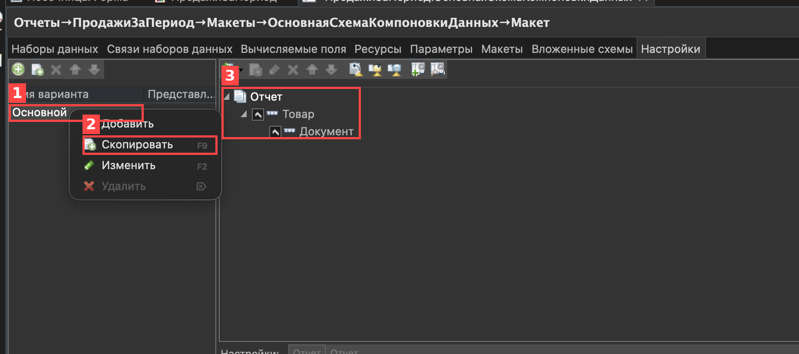
| № | Что это |
|---|---|
| 1 | Вариант «Основной» |
| 2 | «Скопировать» (F9) |
| 3 | Структура выделенного варианта |
Почему копировать, а не «Добавить». Новый вариант через «Добавить» пустой: нет структуры, выбранных полей, пользовательских настроек периода. Всё пришлось бы настраивать заново. Копия получает всё сразу, остаётся поменять только то, чем вариант отличается.
Заполни имя и представление:
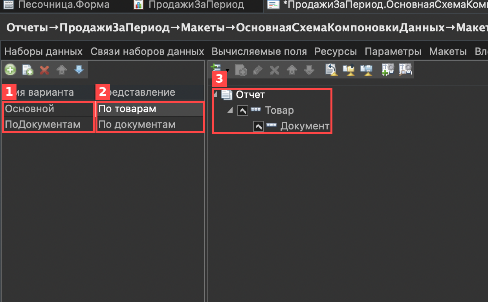
| № | Что это |
|---|---|
| 1 | Имя — для программиста, без пробелов |
| 2 | Представление — для пользователя, обычным текстом |
| 3 | Структура «Основного»: Товар → Документ |
Если представление пустое, пользователь увидит имя ПоДокументам, слитно и некрасиво.
Шаг 2. Структура копии
Что делаем. Выдели вариант «ПоДокументам» и переставь группировки: Документ сверху, Товар внутри.
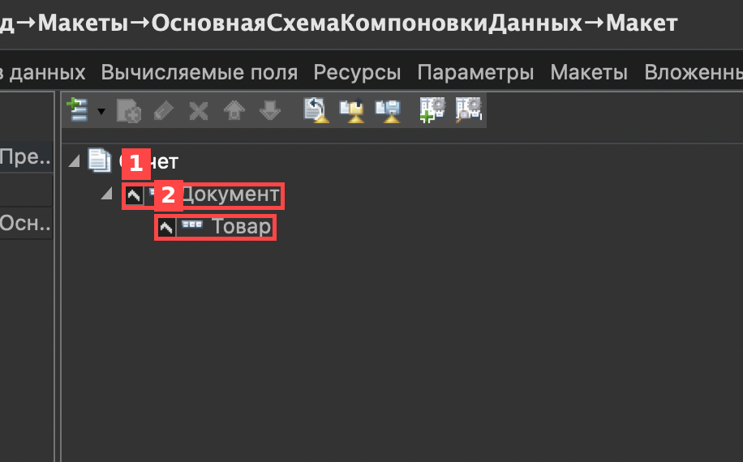
| № | Что это |
|---|---|
| 1 | Верхний уровень — Документ |
| 2 | Внутри — Товар |
Запрос, ресурсы и цена не меняются: они в схеме и общие для обоих вариантов.
Шаг 3. Выбор варианта в предприятии
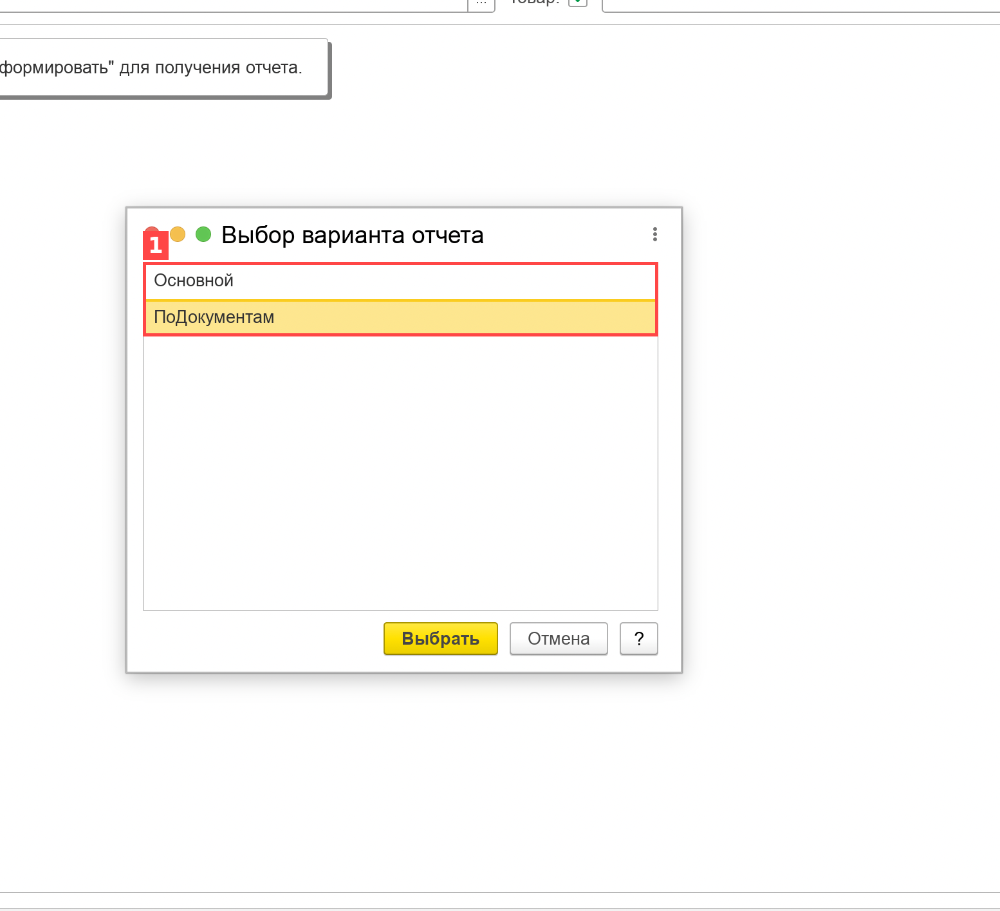
| № | Что это |
|---|---|
| 1 | Варианты отчёта. На скрине ещё имя — после заполнения представления будет «По документам» |
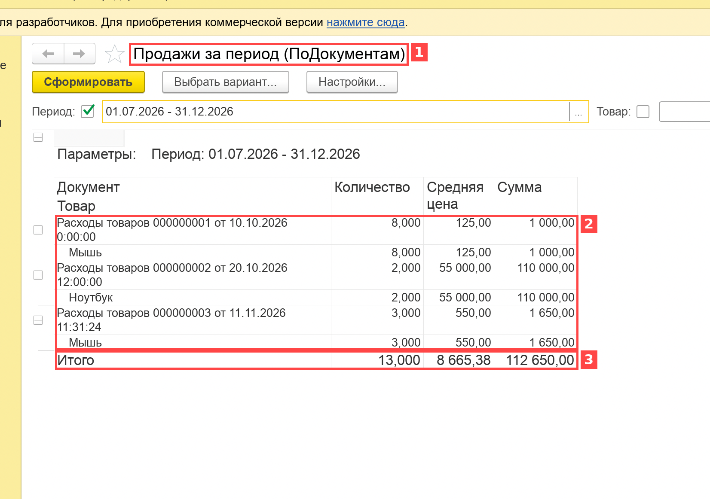
| № | Что это |
|---|---|
| 1 | Название варианта в заголовке окна |
| 2 | Документ сверху, товары внутри |
| 3 | Итог тот же, что в варианте «По товарам»: данные одни |
Шаг 4. Режим редактирования
В задаче 4.1 все пользовательские настройки были в «Быстром доступе» — прямо на форме. Но на форме место ограничено, а редкие настройки только мешают.
Что делаем. Вариант «ПоДокументам» → вкладка «Отбор» → строка Товар → кнопка «Свойства элемента пользовательских настроек» → «Режим редактирования».
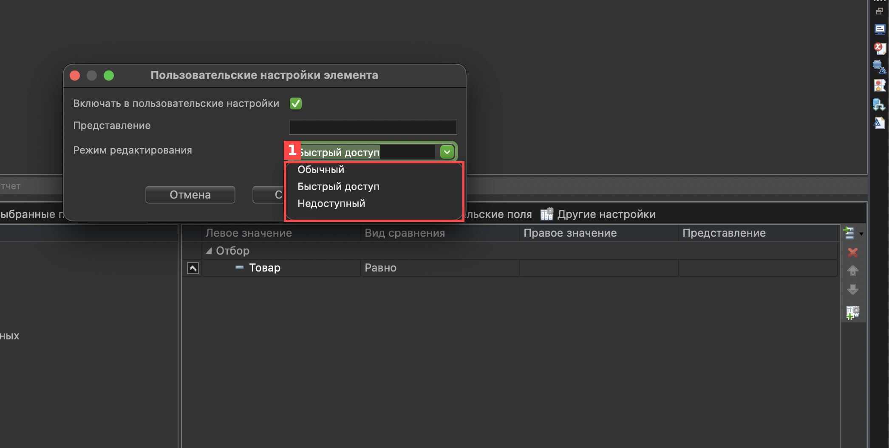
| № | Что это |
|---|---|
| 1 | Три режима |
| Режим | Где пользователь видит настройку |
|---|---|
| Быстрый доступ | На форме и в «Настройках…» |
| Обычный | Только в «Настройках…» |
| Недоступный | Нигде. Настройка работает, но пользователь её не видит и не меняет |
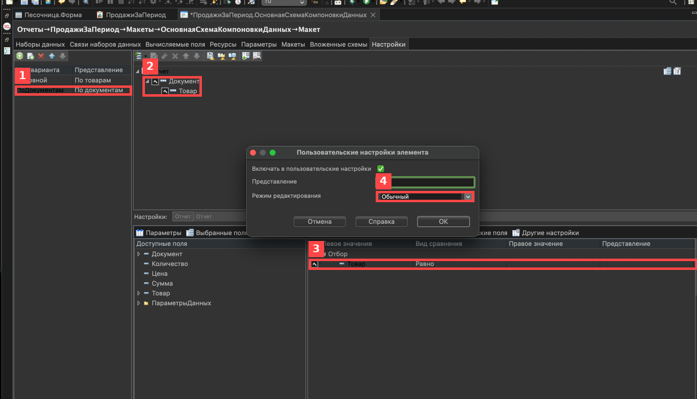
| № | Что это |
|---|---|
| 1 | Выделен вариант «ПоДокументам» |
| 2 | Его структура: Документ → Товар. Так проверяешь, что правишь нужный вариант |
| 3 | Вкладка «Отбор», строка Товар |
| 4 | Режим «Обычный» |
У каждого варианта свои настройки. Режим, поставленный в «Основном», на «По документам» не влияет. Перед изменением всегда смотри, какой вариант выделен слева, и сверяй структуру.
Результат в двух вариантах:
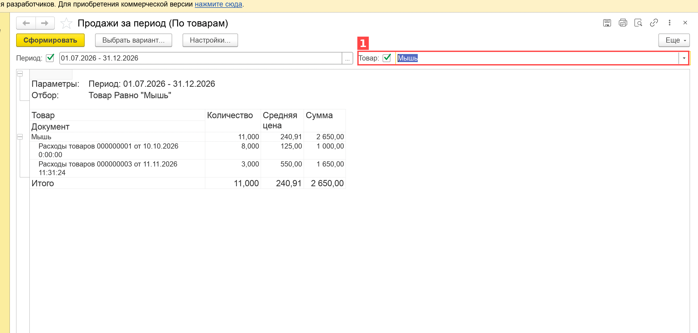
| № | Что это |
|---|---|
| 1 | Товар на форме |
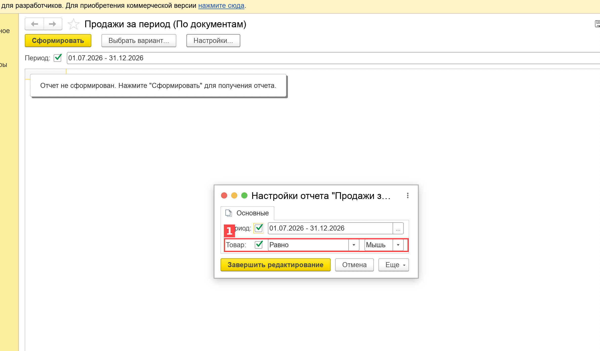
| № | Что это |
|---|---|
| 1 | На форме товара нет, а в окне «Настройки…» он есть |
Шаг 5. Сохранённые настройки
Что происходит. Пользователь выбрал период и товар, закрыл отчёт. При следующем открытии предприятие подставит те же значения: оно запоминает пользовательские настройки каждого пользователя.
Обратная сторона: если программист изменил вариант в EDT, у пользователя могут остаться старые запомненные настройки, и изменения «не видны». Именно поэтому в шаге 4 товар долго не пропадал с формы.
Что делать. «Еще» → «Установить стандартные настройки»: запомненное сбрасывается, берутся настройки варианта.
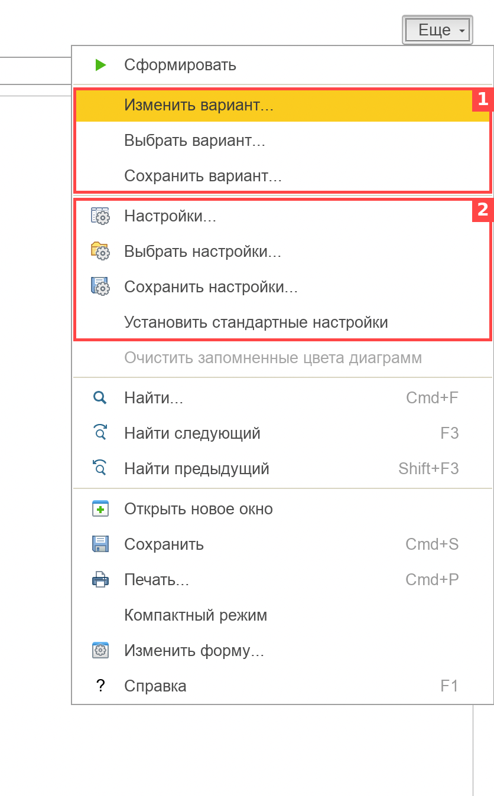
| № | Что это |
|---|---|
| 1 | Работа с вариантами: изменить, выбрать, сохранить |
| 2 | Работа с пользовательскими настройками. «Установить стандартные настройки» — сброс к варианту |
Скрытый отбор работает. После перехода в «Обычный» на форме товара нет, но запомненный отбор «Мышь» остался и продолжает работать:
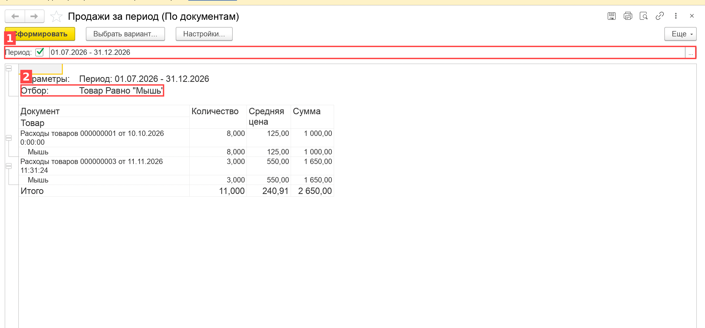
| № | Что это |
|---|---|
| 1 | На форме только период |
| 2 | В шапке отчёта: отбор «Мышь» включён |
Пользователь не поймёт, почему пропали другие товары. Поэтому шапка с параметрами и отборами полезна: по ней видно, что реально применено.
Шаг 6. Пользователь настраивает вариант сам
Пользователь может не только выбирать варианты, но и менять их.
«Еще» → «Изменить вариант…» открывает тот же редактор, что «Настройки» в EDT: структура, поля, отборы, оформление.
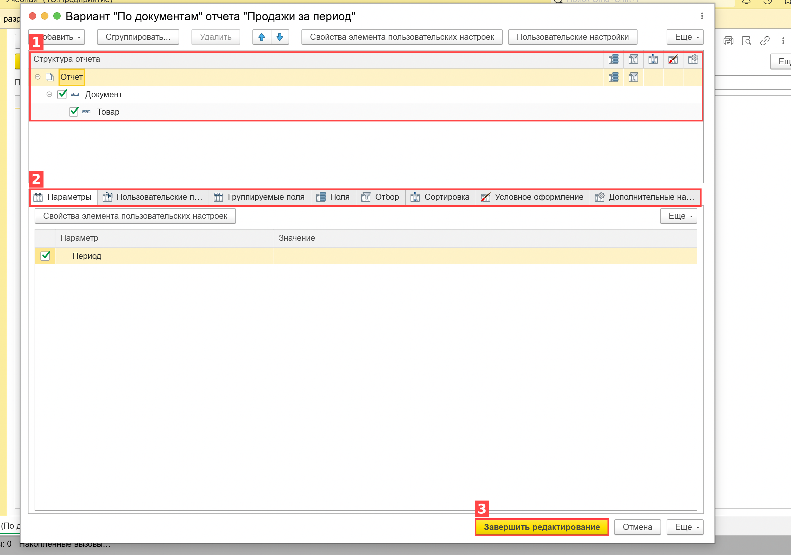
| № | Что это |
|---|---|
| 1 | Структура — как в EDT |
| 2 | Вкладки: параметры, поля, отбор, сортировка, условное оформление |
| 3 | «Завершить редактирование» — применить к текущему отчёту |
«Еще» → «Сохранить вариант…» сохраняет изменённый вариант под своим именем.
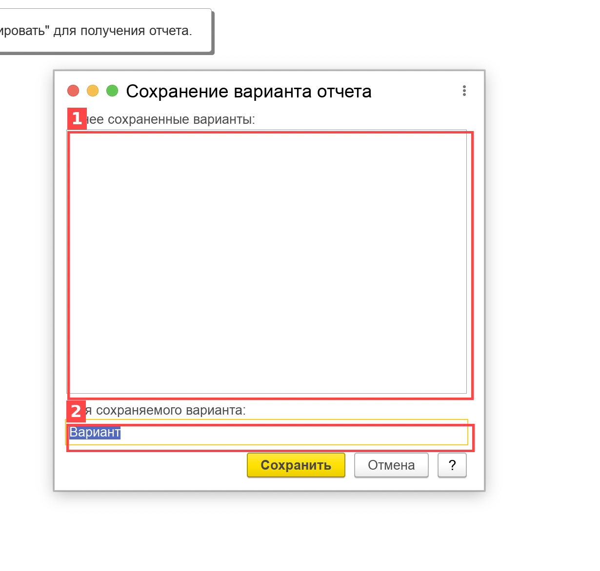
| № | Что это |
|---|---|
| 1 | Варианты, которые пользователь уже сохранял |
| 2 | Имя нового варианта |
Такой вариант хранится в базе, а не в конфигурации: программист его не видит, и в EDT его нет.
Шаг 7. Условное оформление
Задача. Выделить красным продажи больше 50 000, чтобы они бросались в глаза.
Что делаем. Вариант «Основной» → вкладка «Условное оформление» → «+».
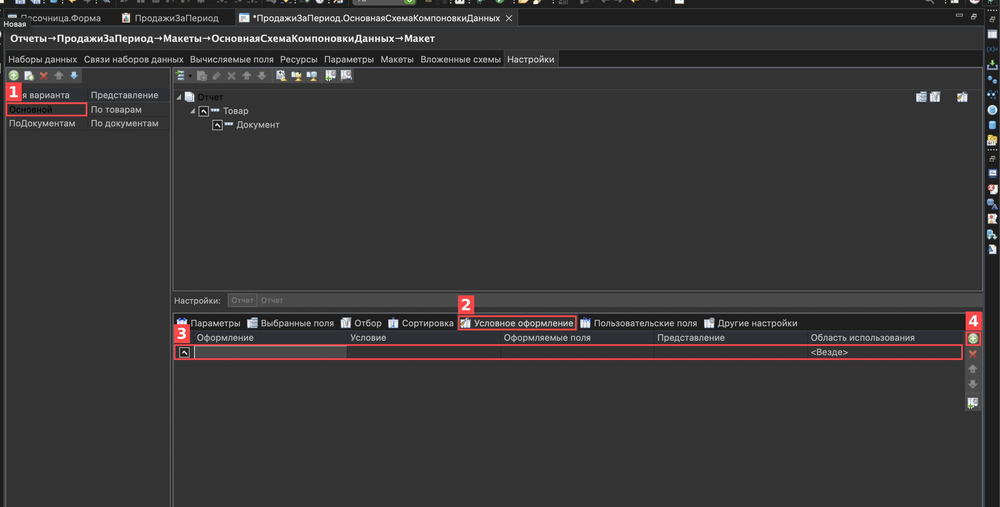
| № | Что это |
|---|---|
| 1 | Вариант «Основной» |
| 2 | Вкладка «Условное оформление» |
| 3 | Строка правила: оформление, условие, поля, область |
| 4 | Добавить правило |
Правило собирается из трёх частей. Что сделать — колонка «Оформление»:
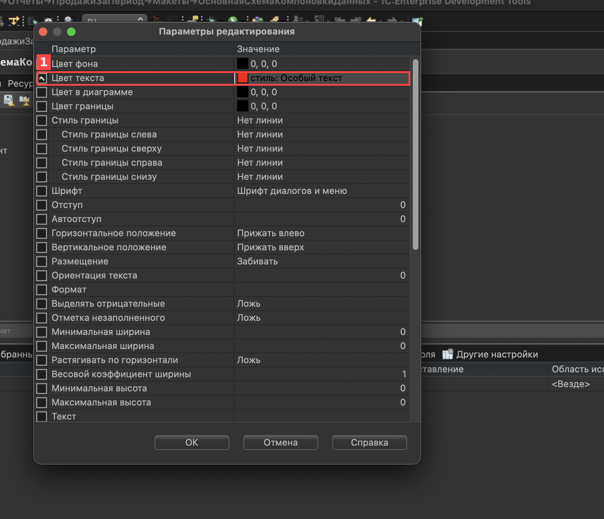
| № | Что это |
|---|---|
| 1 | «Цвет текста» с галкой — используется. Остальные параметры не трогаем |
Когда — колонка «Условие». Окно то же, что для отборов:
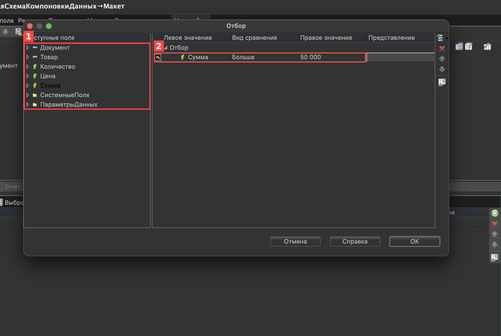
| № | Что это |
|---|---|
| 1 | Поля для условия |
| 2 | Сумма «Больше» 50 000 |
Где — колонка «Оформляемые поля»:
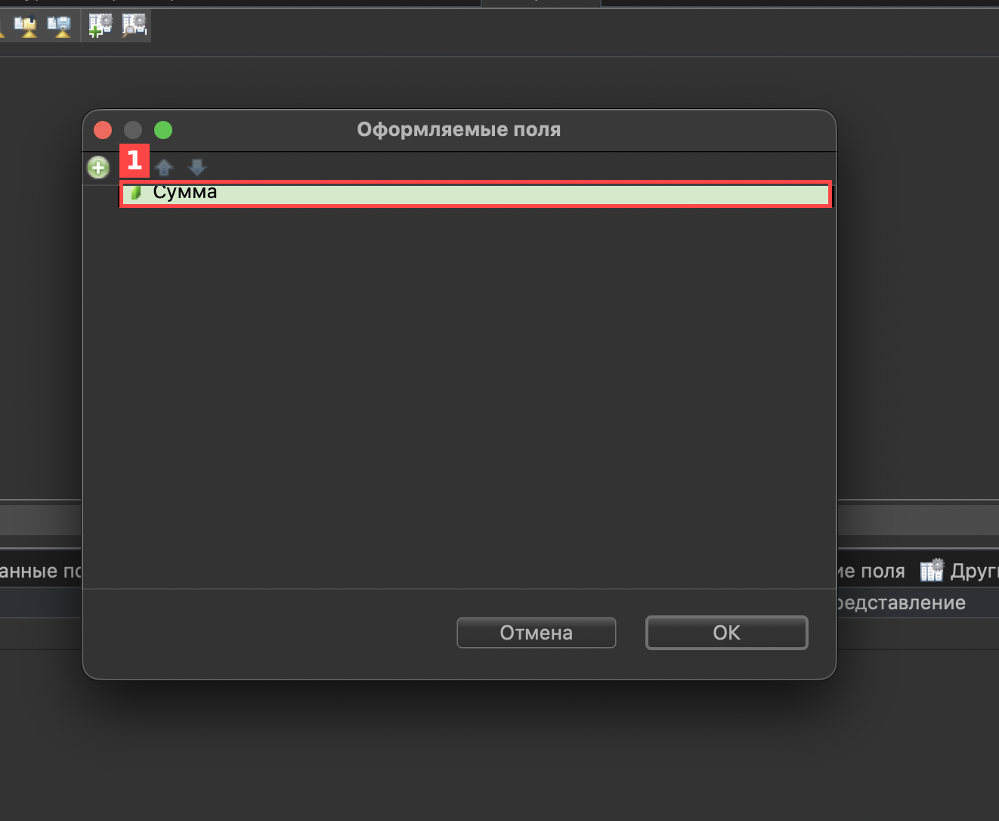
| № | Что это |
|---|---|
| 1 | Красим только Сумма. Если оставить пустым — покрасится вся строка |
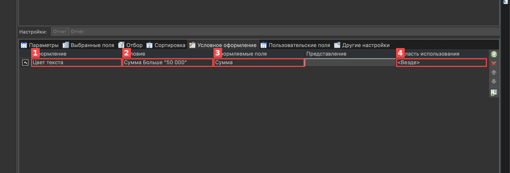
| № | Что это |
|---|---|
| 1 | Что: цвет текста |
| 2 | Когда: сумма больше 50 000 |
| 3 | Где: в поле «Сумма» |
| 4 | В каких частях отчёта: «Везде» |
Читается как фраза: «Покрась текст красным, если сумма больше 50 000, в поле «Сумма», везде».
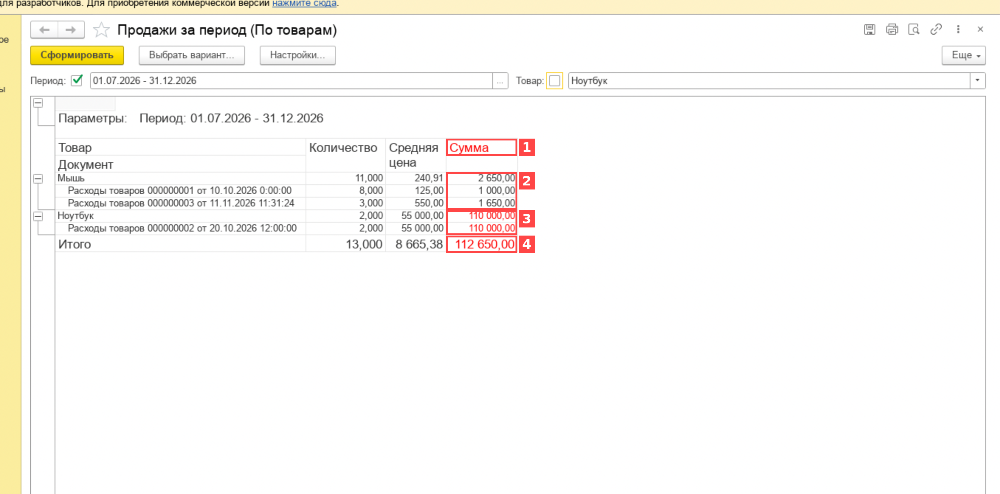
| № | Что это |
|---|---|
| 1 | Заголовок колонки тоже покраснел |
| 2 | «Мышь»: 2 650 и документы меньше 50 000 — чёрные |
| 3 | «Ноутбук»: 110 000 — красный |
| 4 | «Итого» 112 650 — тоже больше 50 000, красный |
Почему покраснела шапка. Область «Везде» включает и заголовки полей, поэтому правило покрасило заголовок колонки «Сумма». Ограничиваем область использования:
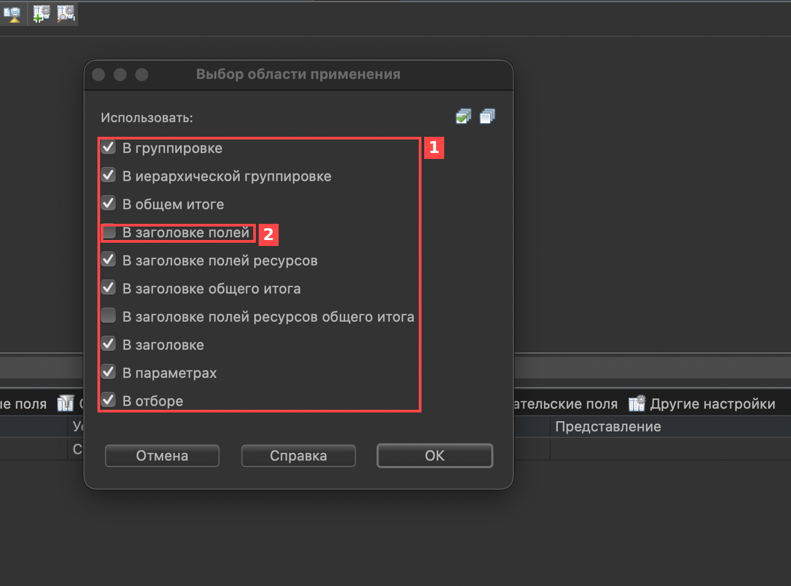
| № | Что это |
|---|---|
| 1 | Части отчёта, где действует правило |
| 2 | «В заголовке полей» — галка снята |
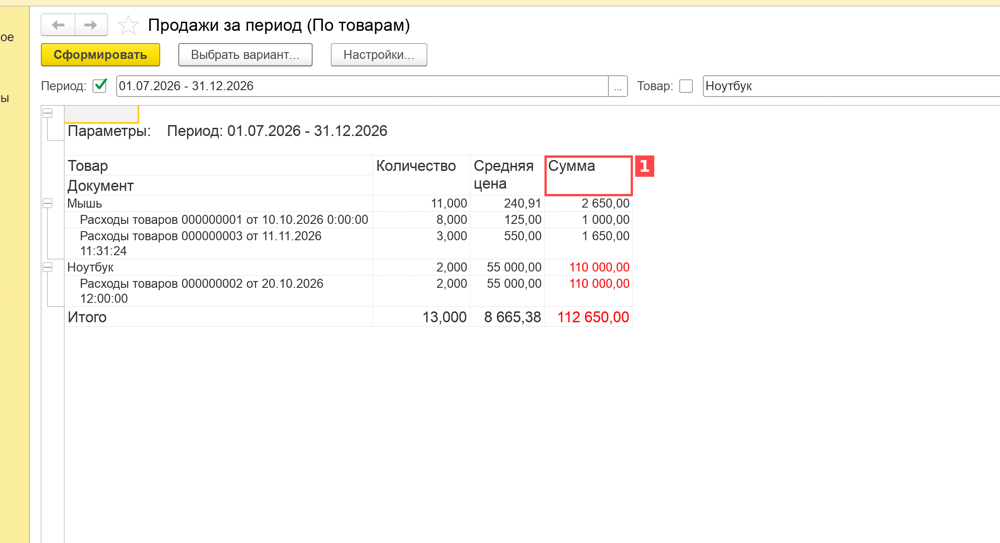
| № | Что это |
|---|---|
| 1 | Заголовок «Сумма» обычный, данные по-прежнему красные |
Шаг 8. Заголовок отчёта
Что делаем. Вкладка «Другие настройки».
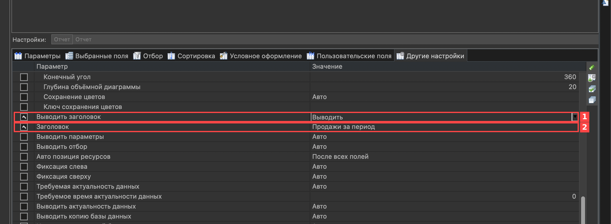
| № | Что это |
|---|---|
| 1 | «Выводить заголовок» — «Выводить» |
| 2 | «Заголовок» — текст |
Галка слева от параметра значит «использовать это значение». Без галки берётся значение по умолчанию, даже если текст вписан.
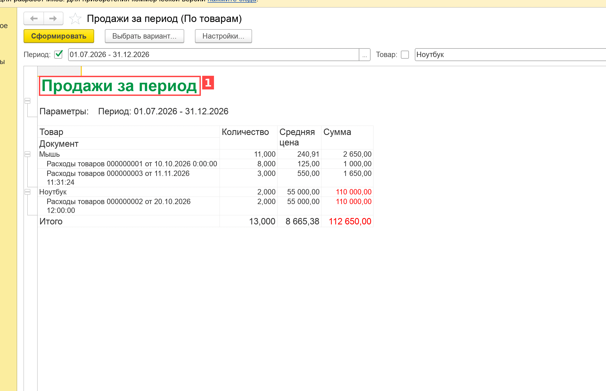
| № | Что это |
|---|---|
| 1 | Заголовок над параметрами |
Заголовок важен при печати и сохранении в Excel: без него на бумаге непонятно, что это за таблица.
3. Ловушки
- Настройка не в том варианте. Симптом: в EDT всё сделано, а в предприятии ничего не изменилось. Причина: слева выделен другой вариант. Проверяй по структуре.
- Запомненные настройки. Симптом: после изменений в EDT отчёт ведёт себя по-старому. Причина: предприятие подставило сохранённые настройки пользователя. «Еще» → «Установить стандартные настройки».
- Скрытый, но работающий отбор. Симптом: часть данных пропала, а на форме фильтра нет. Причина: отбор в режиме «Обычный» или «Недоступный» включён. Смотри шапку отчёта и «Настройки…».
- Оформление красит шапку или итог. Причина: область «Везде». Сними лишние галки в области использования.
- Новый вариант пустой. Причина: создан через «Добавить». Копируй существующий.
4. Практика А
Отчёт «Движения товаров». Раздел 2 не открывай.
- Скопируй вариант, назови «Только остатки»: выбранные поля — товар и конечный остаток.
- Условное оформление: конечный остаток равен 0 — серый текст.
- Заголовок «Остатки товаров».
- В предприятии переключись между вариантами и проверь, что у каждого свой вид.
5. Практика Б
Отчёт «Продажи за период», вариант «Крупные продажи».
- Скопируй «Основной».
- Добавь отбор
Сумма«Больше» 50 000 в режиме «Недоступный». - В предприятии проверь: отбора нет ни на форме, ни в «Настройках…», но в отчёте только крупные продажи.
- Ответь себе: зачем программисту может понадобиться отбор, который пользователь не может снять?
6. Справочник
Режимы редактирования
| Режим | Форма | «Настройки…» | Работает |
|---|---|---|---|
| Быстрый доступ | Да | Да | Да |
| Обычный | Нет | Да | Да |
| Недоступный | Нет | Нет | Да |
Полезные «Другие настройки» — 👀
| Параметр | Что делает |
|---|---|
| Выводить параметры | Показывать ли строку «Параметры» над таблицей |
| Выводить отбор | Показывать ли строку «Отбор» над таблицей |
| Фиксация слева / сверху | Закрепить колонки или шапку при прокрутке |
| Расположение итогов | Итоги групп в начале, в конце или и там, и там |
Где хранятся варианты — 👀
| Чьи варианты | Где |
|---|---|
| Программиста | В схеме отчёта, в конфигурации |
| Пользователя («Сохранить вариант…») | В базе, в хранилище вариантов отчётов |
| Сохранённые пользовательские настройки | В базе, отдельно для каждого пользователя |